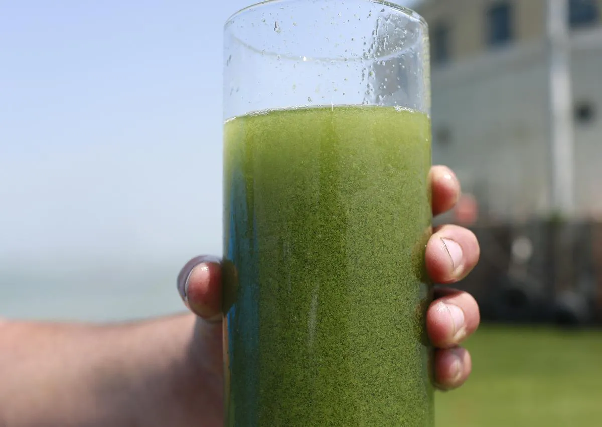

Gator Water

Homemade Gator Water has a lovely green hue. This recipe also fluoresces under blacklight - perfect for parties!
Description
Gator Water is a Ugandan cocktail popularized by the Wakaliwood breakout hit Who Killed Captain Alex (2010).
Ingredients
- Alligator (fresh)
- Water
- Lemon
- Mint Leaf (garnish)
Instructions
- Ask the alligator for permission (written consent is the gold standard).
- Pick up the alligator by the tail.
- Squeeze the alligator's torso until gator juice is secreted into preferred cocktail glass.
- Safely return alligator to its natural habitat.
- Squeeze full lemon into glass.
- Dilute with water until desired light-green hue is achieved.
- Garnish with mint leaf and serve alongside hor d'oeuvres.
Return to Index